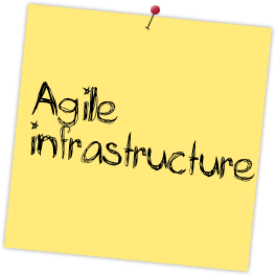
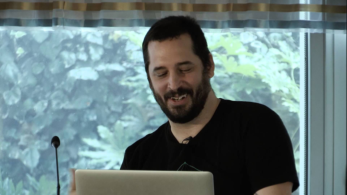
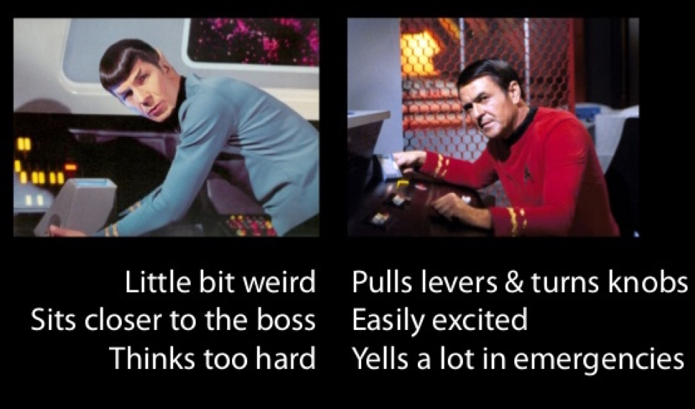
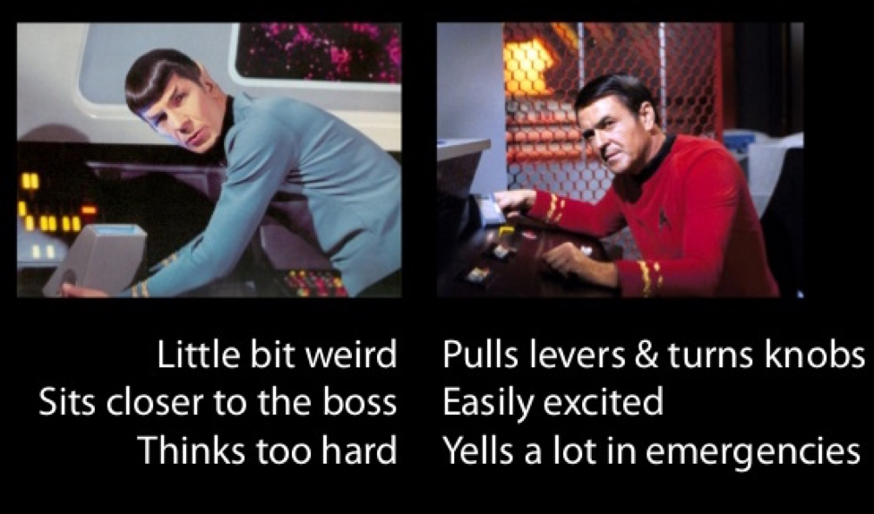
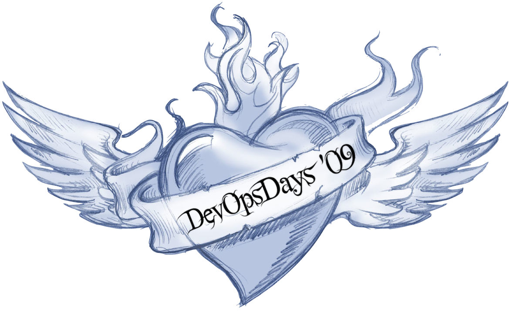
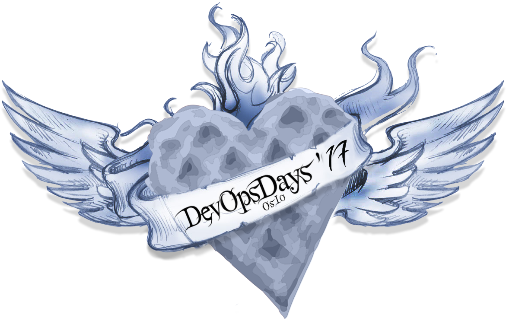

This is DevOps – everything else is a lie!
BEKK Fagdag 10.11.2017

A brief history about
how DevOps got its name
 
10 Deploys per Day: Dev and Ops Cooperation at Flickr.




What is DevOps?
Definition #1
…it is getting developers and operations folk to work closely
together to benefit the business.

DevOps fatigue
Even Agile fatigue
Cloud baby!
Containers
NoOps != No Operations
Get 💩 done!
Definition #2
Developers carry beepers. Kent Beck at a DevOps Norway Meetup in 2013

You build it, you run it!
A shift in focus
|
Development Maintenance Operations |
⇘ ⇒ ⇗ |
Product development
|
⇒
|
User experiences
|
Thank you!
Slides:
http://steinim.github.io/slides/this-is-devops/